Fluid Mechanics Course
Fluid Kinematics

Francesco Ferri
AAU BUILD
Learning Objectives
- Understand how fluid properties vary in space and time
- Learn how to visualize flow using streamlines, pathlines, and streaklines
- Compare Eulerian and Lagrangian descriptions of motion
- Recognize the role of velocity and acceleration in fluid motion
- Apply these ideas to engineering and environmental problems
Why Fluid Kinematics?
Question: Will fresh air reach the occupied zone without causing disconfort?
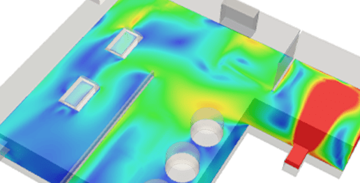
We can use kinematics to describe the indoor velocity field, helping to determine where fresh air travels, how quickly it reaches occupants, and where draughts or stagnant zones occur.
Question: Where will the wind accelerate, separate and create critical exposure on the structure?
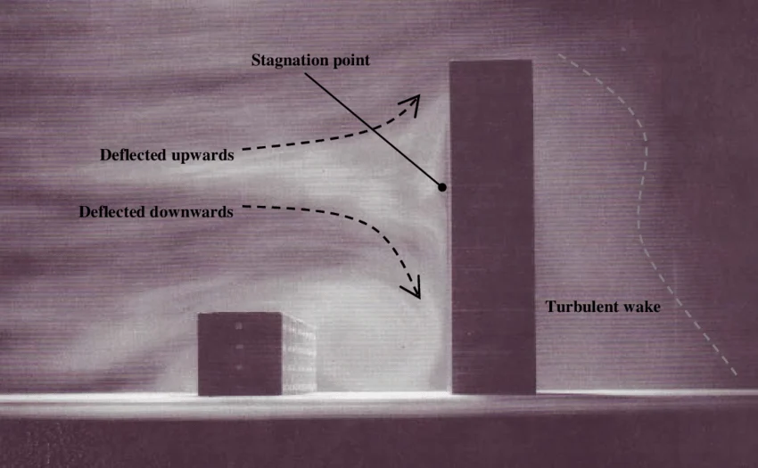
Determine the wind velocity field around the structure to assess potential areas of high exposure.
For a steady flow, does the fluid accelerate?

What is Kinematics?
From Statics to Motion
kinein "to move"
In Lecture 1, a static fluid satisfied:
For moving fluid particles, Newton's second law requires acceleration:
Definition
Fluid kinematics is the study of fluid motion without reference to the forces that cause it.
- Velocity field
- Acceleration field
- Particle trajectories and deformation
- ...
field is the representation of fluid parameters as function of the spatial coordinates
scalar field: each location is defined by a single value of the given parameter
vector field: each location is defined by more than one value of the given parameter, depending on the number of coordinate.
vector field can be defined either in vector or magnitude and direction formats
Applications
CFD
- Calculate the velocity field
- Identify acceleration, recirculation, and separation
- Use these results to evaluate engineering performance
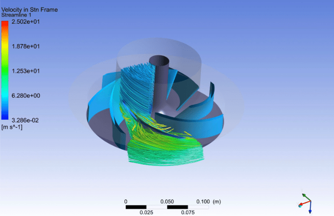
Experiments
- Measure velocity using PIV or particle tracking
- Visualize trajectories using dye or smoke
- Compare measurements with CFD predictions
Kinematics transforms observed motion into velocity, acceleration, and trajectories that engineers can analyse.
What Kinematics Is, and Is Not
Fluid kinematics is
Kinematics is the description and analysis of fluid motion.
- Velocity field: Where and how fast is the fluid moving?
- Acceleration field: How does the motion change?
- Trajectories: Where do fluid particles go?
- Rotation and deformation: How do fluid elements change shape?
Fluid kinematics is not
- Flow visualization itself: Smoke, dye and PIV are methods for observing motion.
- Fluid dynamics: Kinematics does not explain which forces cause the motion.
- A calculation of pressure or structural loads: These require governing equations and dynamics.
Visualization shows the motion. Kinematics describes and analyses it. Dynamics explains its causes.
Kinematics describes how a fluid moves. But how should we observe and represent that motion? We can either follow individual fluid particles or observe the flow at fixed locations.
Descriptions of Motion
Two Distinct Views
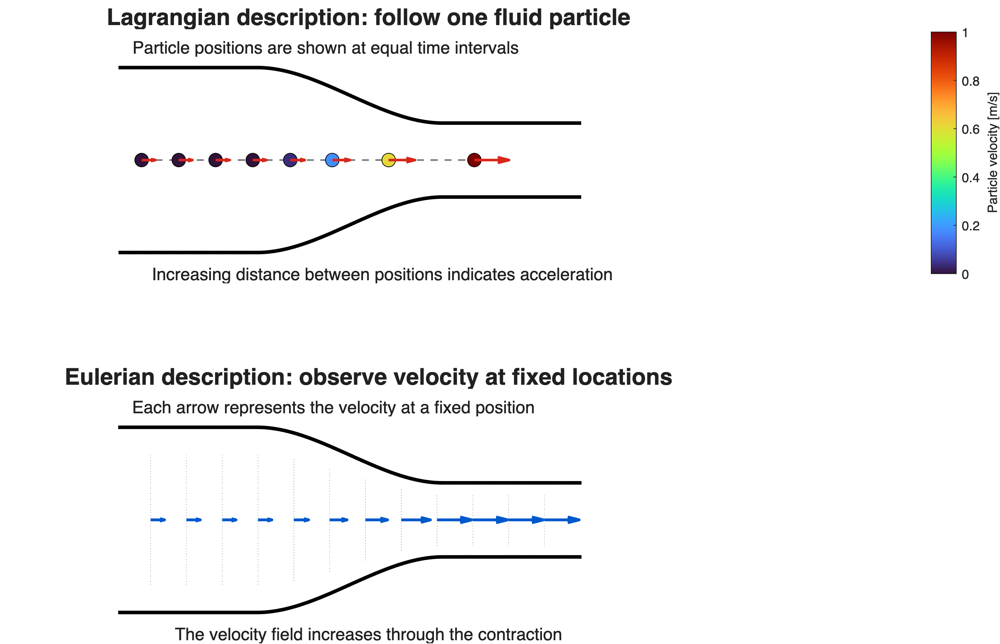

Lagrangian Viewpoint
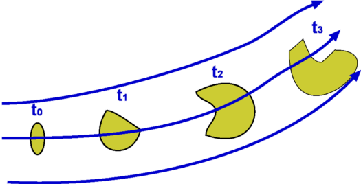
What happens to this particle as it moves?
A particle has a time-dependent position vector x(t).
Example: tracking drifting buoys or dye particles in a current.
Eulerian Viewpoint
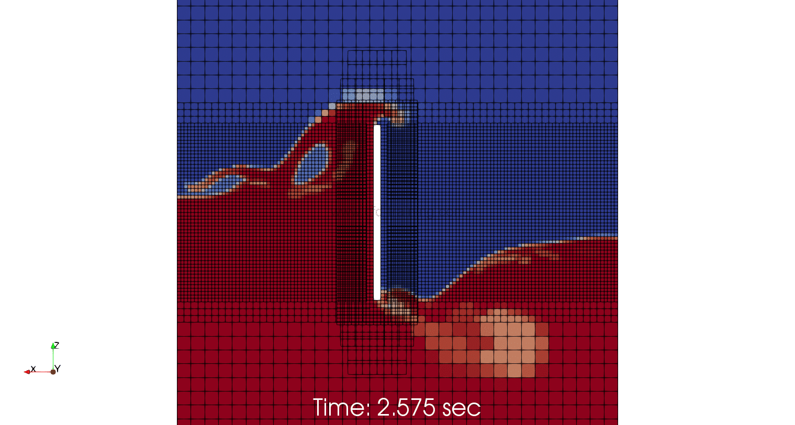
What happens at this location as time passes?
Properties are expressed as functions of position and time: φ(x, t).
Example: weather stations measuring wind velocity at fixed locations.
System and Control Volume
Lagrangian and Eulerian are viewpoints for analyzing fluid motion.
The actual analysis involves choosing a system (following a specific mass) or a control volume (fixing a region in space).
System approach
- Follows a specific mass
- Useful in Lagrangian analysis
Control volume approach
- Fixes a region in space
- Useful in Eulerian analysis
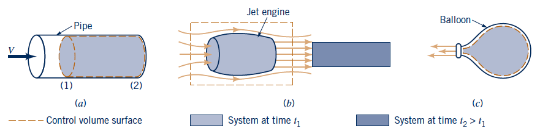
Eulerian and Lagrangian describe how motion is observed, whereas the control-volume and system approaches define what region or mass is selected for applying conservation laws.
In most fluid-engineering applications, following every fluid particle is impractical. Instead, we use the Eulerian description and assign a velocity to every location and time.
Velocity Field
Velocity as a Field
A velocity field describes the fluid velocity at every point in space and time.
It can be written as:
- Velocity field is a vector field
- Speed is the magnitude of the velocity vector $$V = \lvert \mathbf{V} \rvert = (u^2+v^2+w^2)^{1/2}$$
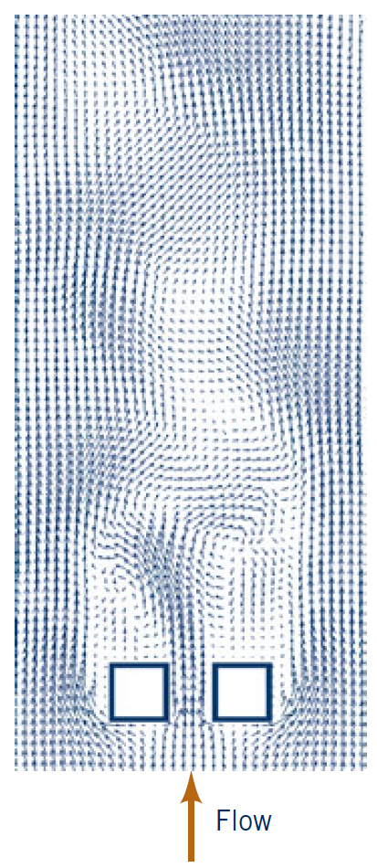
Why the Velocity Field Matters

- It tells us where fluid is moving and how fast
- It is the basis for acceleration and deformation
- It is essential for conservation laws and CFD
- It helps identify regions of recirculation, stagnation, and separation
Flow Visualization
Streamlines, Pathlines, and Streaklines
Streamline
Instantaneous tangent to \( \mathbf{V}\)
Pathline
Actual trajectory of a fluid particle
Streakline
Line connecting particles passing through a fixed point
Steady flow: streamlines, pathlines and streaklines coincide.
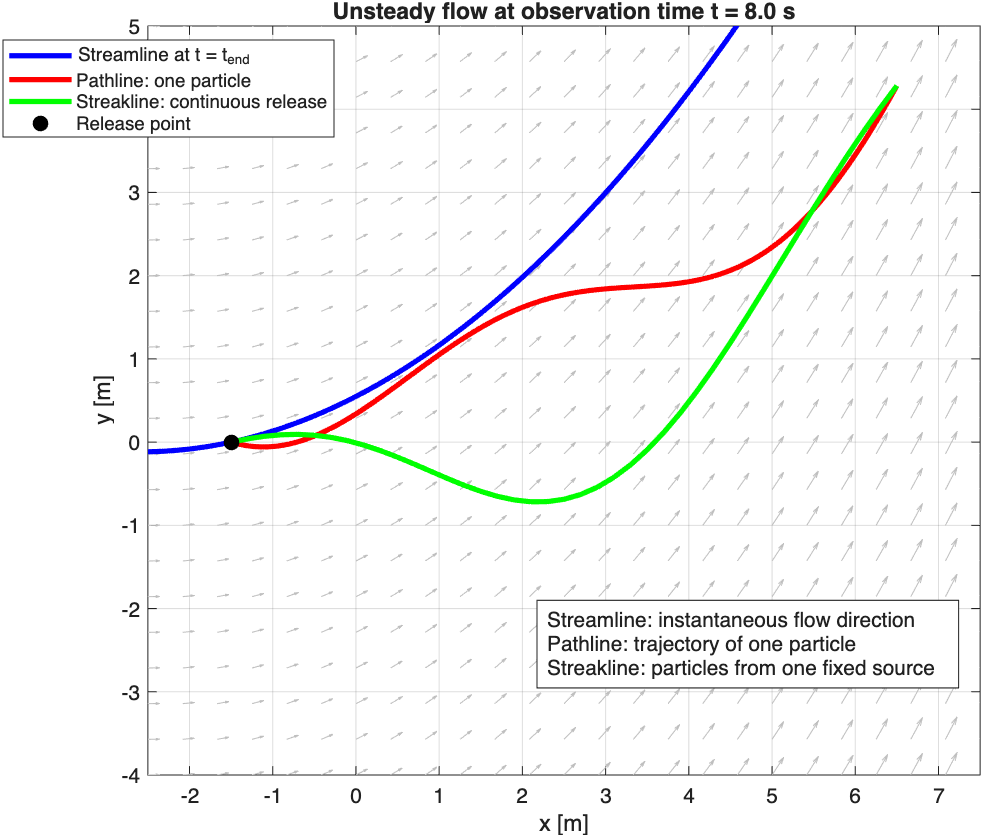
Visualization Examples
Experimental Methods
Streamlines, pathlines, and streaklines describe different aspects of fluid motion.
In experiments, these kinematic descriptions are observable by adding tracers and recording how they move.
- Dye or smoke from a fixed point → streakline
- Tracking one particle or bubble → pathline, Lagrangian measurement
- PIV measurements over an area → instantaneous Eulerian velocity field
- Tufts or oil flow on a surface → local flow direction, separation and reattachment
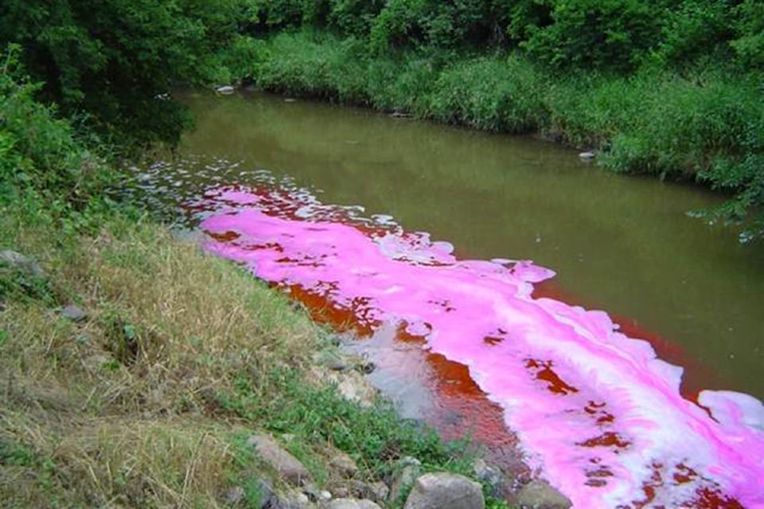
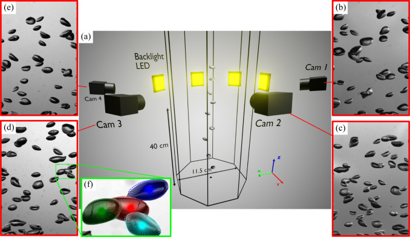
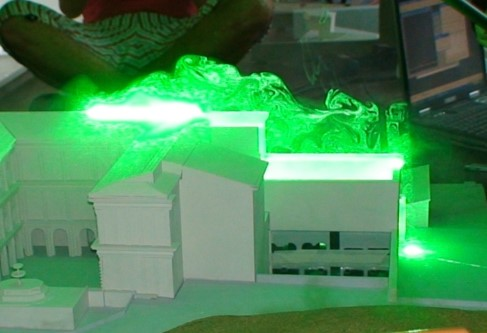
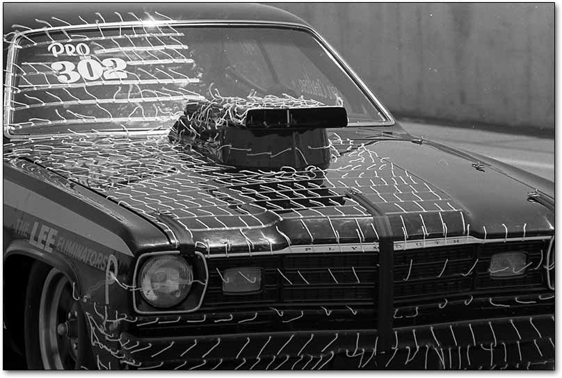
Experiments therefore convert visible tracer motion into quantitative kinematic information, particularly trajectories and velocity fields. Dynamics is needed afterward to relate this observed motion to pressure, viscosity and forces.
Acceleration and Material Derivative
Acceleration Field
To apply Newton's Second Law, we must be able to estimate the acceleration field.
If we have a velocity field \(\mathbf{V}(x,y,z,t)\) (Eulerian), the acceleration field is the time rate of change of velocity for a moving fluid particle (Lagrangian):
$$\mathbf{a}=\frac{d\mathbf{V(x,y,z,t)}}{dt}$$ $$=\frac{\partial \mathbf{V}}{\partial t}+\frac{\partial \mathbf{V}}{\partial x}\frac{dx}{dt}+\frac{\partial \mathbf{V}}{\partial y}\frac{dy}{dt}+\frac{\partial \mathbf{V}}{\partial z}\frac{dz}{dt}$$
Local acceleration \(\frac{\partial \mathbf{V}}{\partial t}\)
Velocity changes with time at a fixed point.
Convective acceleration \(u\frac{\partial \mathbf{V}}{\partial x}+v\frac{\partial \mathbf{V}}{\partial y}+w\frac{\partial \mathbf{V}}{\partial z}\)
A particle enters regions with different velocity.
The convective/advection term \((\mathbf{V}\cdot\nabla)\mathbf{V}\) is non-linear. Describe complex interaction in the flow such as turbulence and instability. Key element of Navier-Stoke equation.
Implications in turbulence:
- Small disturbances can grow and interact, producing chaotic motion (instable feed-back the velocity is advecting itself)
- Energy can cascade from large scales (big eddies) to small scales (tiny vortices). A disturbance at one scale can transfer energy to other scales.
- As consequence the system predictability decreases — sensitive dependence on initial conditions.
Material Derivative of a Field
- \(\frac{D}{Dt} \rightarrow \): how a property change for a moving fluid particle
- \(\partial/\partial t\rightarrow \): local rate of change at a fixed point (Eulerian)
- \(\mathbf{V}\cdot\nabla\rightarrow \): convective1 property change due to the particle moving to a region with different condition/value
Example Time Rate of Change of Temperature in a Candle: $$\frac{DT}{Dt}=\frac{\partial T}{\partial t}+\mathbf{V}\cdot\nabla T$$ This represent the local variation of T in time and the temperature variation due to displacement.
1NOTE: Tecnically advection since it is transport of quantity by the bulk of the fluid.
Convection is a broader concept: includes advection and diffusion/conduction
Why Kinematics Matters: Flow Through a Nozzle
The nozzle flow is steady:
However, a fluid particle moves into regions of increasing velocity:
Kinematics converts the velocity field into the acceleration experienced by the particle.
Steady flow can have acceleration.
Takeaway
Fluid kinematics provides the language for describing motion in a fluid.
It connects geometry, velocity, acceleration, and flow visualization.
This foundation is essential for the dynamics and governing equations that follow.